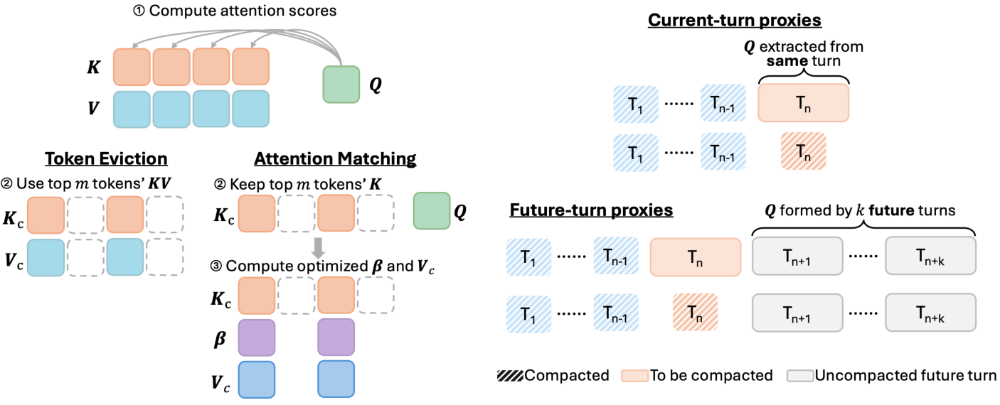

Why it matters왜 중요한가
Almost the entire KV-compression literature quietly assumes the context is finished before you compress it. Agents break that assumption on turn one.
KV 압축 문헌의 거의 전부는 "압축하기 전에 컨텍스트가 이미 완성돼 있다"고 조용히 가정한다. 에이전트는 첫 턴부터 그 가정을 깨뜨린다.
Query-aware eviction reads the question through an observation window; learned compressors like Cartridges spend offline rollouts and gradient steps building a compact cache. Both are legitimate — and both are unavailable inside a live agent loop, where a search result must be compressed now, the query that will need it does not exist yet, and any compaction cost lands directly on user-visible latency. The paper's framing is that this makes proxy-query selection, not the compaction algorithm, the real design variable. That reframing is the contribution: it is an empirical study, not a new method, and its value is in telling you which of the free signals lying around the inference path is actually worth using.
쿼리 인지 축출은 관찰 윈도우를 통해 질문을 미리 읽고, Cartridges 같은 학습형 압축기는 오프라인 롤아웃과 그래디언트 스텝을 들여 압축 캐시를 만든다. 둘 다 정당한 방법이지만, 둘 다 실시간 에이전트 루프 안에서는 쓸 수 없다. 검색 결과는 지금 압축해야 하고, 그것을 필요로 할 쿼리는 아직 존재하지 않으며, 압축 비용은 그대로 사용자 체감 지연으로 떨어지기 때문이다. 논문의 프레이밍은, 그래서 진짜 설계 변수는 압축 알고리즘이 아니라 프록시 쿼리 선택이라는 것이다. 이 재프레이밍 자체가 기여다. 새 기법이 아니라 실증 연구이고, 그 가치는 추론 경로에 이미 공짜로 굴러다니는 신호들 중 무엇이 실제로 쓸 만한지를 알려주는 데 있다.

By the numbers핵심 숫자
The headline table핵심 표
| Model | Method | Acc. | Avg. turns | Peak KV (k tok) | Serving batch | Throughput (q/h) |
|---|---|---|---|---|---|---|
| Qwen3.5-27B | No compaction | 52.50 | 18 | 612.9 | 8 | 217 |
| Qwen3.5-27B | AM | 51.00 | 28 | 172.8 | 32 | 918 |
| Qwen3.5-27B | TE | 52.00 | 31 | 175.2 | 32 | 717 |
| Gemma-4-31B | No compaction | 48.75 | 13 | 272.1 | 8 | 217 |
| Gemma-4-31B | AM | 50.00 | 17 | 99.6 | 16 | 364 |
| Gemma-4-31B | TE | 50.75 | 18 | 121.3 | 16 | 324 |
The three cheap proxies값싼 프록시 세 가지
Boundary queries
Take the model's own query vectors at the structural closing token of the finished turn — <|im_end|> for Qwen. Zero extra forward passes. Surprisingly strong on BrowseComp-Plus (45.25 vs 32.75 for repeat-prefill on Qwen3.5-4B), consistent with structural tokens acting as semantic attention sinks — but it collapses on WideSearch (24.29 vs a 44.55 baseline), so the win is benchmark-shaped, not general. AM cannot use it at all: a single query is too weak a constraint for AM's fitting objective.
끝난 턴의 구조적 종료 토큰(Qwen이면 <|im_end|>)에서 모델 자신의 쿼리 벡터를 가져온다. 추가 순전파가 0회다. BrowseComp-Plus에서는 의외로 강하고(Qwen3.5-4B에서 45.25 대 repeat-prefill의 32.75), 구조 토큰이 의미 있는 어텐션 싱크로 작동한다는 최근 관찰과도 맞아떨어진다. 그러나 WideSearch에서는 무너진다(24.29, 기준선 44.55). 즉 이 승리는 벤치마크의 모양에 의존하며 일반적이지 않다. AM은 아예 쓸 수 없다 — 쿼리 하나로는 AM의 피팅 목적함수를 제약하기에 너무 약하다.
Repeat-prefill queries
Borrowed from KVzip: append "Let me repeat the previous thinking, tool call, and tool response", teacher-force the model through the turn again, and harvest the queries produced while it re-reads its own output. Query-agnostic and self-supervised — and the weakest option tested. It loses to boundary queries by 12.5 points and to a one-turn delay by 11 points on Qwen3.5-4B, while costing a whole extra prefill of the turn.
KVzip에서 빌려온 방식이다. "앞의 사고·도구 호출·도구 응답을 그대로 반복하겠다"는 프롬프트를 붙이고 모델을 teacher-forcing으로 그 턴을 다시 통과시킨 뒤, 자기 출력을 다시 읽으며 생성한 쿼리를 수확한다. 쿼리 비의존적이고 자기지도적이지만, 시험한 것 중 가장 약했다. Qwen3.5-4B에서 boundary 대비 12.5점, 1턴 지연 대비 11점을 잃으면서 턴 하나만큼의 프리필 비용을 통째로 더 낸다.
Delayed future-turn queries
Stop guessing: hold turn Tt raw for k more turns and use the queries the agent actually emits while generating Tt+1…t+k. These are real reads of that turn, not proxies for them. One turn of delay beats immediate repeat-prefill in all four model×benchmark pairs; a five-turn delay on Qwen + BrowseComp-Plus reaches 46.8, edging past the 46.00 no-compaction baseline. The price is paid in the currency you were trying to save — the delayed turns sit uncompressed in the cache.
추측을 그만두는 방식이다. 턴 Tt를 k턴 동안 압축하지 않은 채로 들고 있다가, 에이전트가 Tt+1…t+k를 생성하며 실제로 내놓은 쿼리를 쓴다. 그 턴을 향한 프록시가 아니라 진짜 읽기다. 1턴 지연만으로도 즉시 repeat-prefill을 4개 모델×벤치마크 쌍 전부에서 이긴다. Qwen + BrowseComp-Plus에서 5턴 지연은 46.8에 도달해 무압축 기준선 46.00을 근소하게 넘는다. 대가는 애초에 아끼려던 바로 그 자원으로 지불된다 — 지연된 턴들이 압축되지 않은 채 캐시를 차지한다.
Simple beats optimized
AM does strictly more work than TE: it fits an additive attention bias β so the kept keys carry the full cache's unnormalized attention mass, then fits reconstructed values VC to match full-cache attention outputs — per layer, per KV head, with ridge regularization. Under good proxies that should dominate. Under these proxies it does not: TE ties or wins across proxy, delay, and budget sweeps. Fitting harder to a target that misrepresents the future buys you a better approximation of the wrong thing.
AM은 TE보다 엄격히 더 많은 일을 한다. 남긴 키들이 전체 캐시의 비정규화 어텐션 질량을 담도록 가산 바이어스 β를 피팅하고, 이어서 전체 캐시의 어텐션 출력을 재현하도록 값 VC를 피팅한다 — 레이어별·KV 헤드별로, 릿지 정규화까지 붙여서. 프록시가 좋다면 이쪽이 압도해야 한다. 그런데 이 프록시들 아래에서는 그렇지 않다. TE가 프록시·지연·예산 스윕 전반에서 비기거나 이긴다. 미래를 잘못 대표하는 타깃에 더 열심히 맞추면, 틀린 것을 더 정확하게 근사하게 될 뿐이다.
How it works어떻게 작동하나
- Segment the trajectory. 궤적을 분할한다. The prefix P — system prompt, tool definitions, user query — is never compacted. Everything after it is cut into turns, and each turn is further split into the assistant generation and the tool response, which are compacted independently. Structural tokens (
<think>,<tool_call>, turn boundaries) are preserved verbatim so the chat template does not break.프리픽스 P(시스템 프롬프트·도구 정의·사용자 질의)는 절대 압축하지 않는다. 그 뒤는 턴 단위로 잘리고, 각 턴은 다시 어시스턴트 생성과 도구 응답으로 나뉘어 따로 압축된다. 구조 토큰(<think>,<tool_call>, 턴 경계)은 채팅 템플릿이 깨지지 않도록 원문 그대로 보존된다. - Collect proxy queries. 프록시 쿼리를 모은다. Either grab them the moment the turn closes (boundary or repeat-prefill), or wait k turns and record the query vectors the agent produces in its next generations. Both Qwen3.5 and Gemma-4 are hybrid-attention, so only the full-attention layers are touched; sliding-window state is left alone.턴이 끝나는 순간 바로 얻거나(boundary 또는 repeat-prefill), k턴을 기다렸다가 에이전트가 다음 생성에서 만들어내는 쿼리 벡터를 기록한다. Qwen3.5와 Gemma-4는 모두 하이브리드 어텐션이라 완전 어텐션 레이어만 건드리고, 슬라이딩 윈도우 상태는 그대로 둔다.
- Score and keep 20%. 점수를 매겨 20%만 남긴다. Each cached position gets a root-mean-square attention mass across the proxy queries; the top m survive. TE stops here, storing those original keys and values. AM continues, solving two least-squares problems — first for the bias, then for the values.캐시된 각 위치는 프록시 쿼리 전체에 대한 어텐션 질량의 제곱평균제곱근으로 점수를 받고, 상위 m개만 살아남는다. TE는 여기서 멈추고 그 원본 키·값을 저장한다. AM은 계속 나아가 최소제곱 문제 두 개를 푼다 — 먼저 바이어스, 그다음 값.
- Freeze and move on. 동결하고 넘어간다. Once compacted, the turn's original KV is discarded and the compact form is frozen — never re-optimized, never re-compacted as the trajectory grows. All later generation reads that turn only through what survived of it. Errors are permanent.한 번 압축되면 그 턴의 원본 KV는 버려지고 압축본은 동결된다. 궤적이 길어져도 다시 최적화하거나 다시 압축하지 않는다. 이후의 모든 생성은 그 턴을 오직 20%의 잔여물을 통해서만 읽는다. 오류는 영구적이다.
- Measure the agent, not just the attention. 어텐션만이 아니라 에이전트를 측정한다. Trajectories are generated at batch size 1, then the recorded KV lengths and token counts are replayed against SGLang/vLLM decode latencies to estimate what a real serving stack would do. The paper additionally embeds every search query and measures how often the agent asks something it already asked.궤적은 배치 크기 1로 생성한 뒤, 기록된 KV 길이와 토큰 수를 SGLang/vLLM 디코드 지연에 재생시켜 실제 서빙 스택의 거동을 추정한다. 논문은 여기에 더해 모든 검색 쿼리를 임베딩해, 에이전트가 이미 물어본 것을 얼마나 자주 다시 묻는지 측정한다.
What to take away그래서, 가져갈 것
If you are compacting an agent's cache today, the highest-leverage change is not the algorithm — it is waiting one turn. A single turn of delay beat immediate compaction in every model×benchmark pair tested, and it costs no compute at all, only a briefly larger cache.
지금 에이전트 캐시를 압축하고 있다면, 가장 효과가 큰 변경은 알고리즘이 아니라 한 턴을 기다리는 것이다. 1턴 지연은 시험한 모든 모델×벤치마크 쌍에서 즉시 압축을 이겼고, 연산 비용은 전혀 들지 않으며 잠시 캐시가 커질 뿐이다.
Optimization quality is bounded by proxy quality. AM's extra machinery — bias fitting, value reconstruction — buys nothing once the target queries misrepresent the future, and TE's selection-only design is the more robust default under online constraints. This is a useful prior for anyone building low-rank or learned KV compressors for agents.
최적화의 품질은 프록시의 품질에 의해 상한이 정해진다. 타깃 쿼리가 미래를 잘못 대표하는 순간, AM의 추가 장치(바이어스 피팅, 값 재구성)는 아무것도 사주지 못하고, 선택만 하는 TE가 온라인 제약 아래에서 더 견고한 기본값이 된다. 에이전트용 저랭크·학습형 KV 압축기를 만드는 사람에게 유용한 사전 지식이다.
Compaction is an agent-level intervention, not an attention-approximation problem. The same 0.2 ratio left Gemma-4-E4B's trajectory length untouched while pushing Qwen3.5-4B from 20 to 38 turns — the two models absorbed the same memory loss in completely different ways, which is invisible if you only log accuracy.
압축은 어텐션 근사 문제가 아니라 에이전트 수준의 개입이다. 동일한 0.2 비율이 Gemma-4-E4B의 궤적 길이는 거의 건드리지 않은 반면 Qwen3.5-4B는 20턴에서 38턴으로 밀어올렸다. 같은 메모리 손실을 두 모델이 완전히 다른 방식으로 흡수한 것인데, 정확도만 로깅하면 이는 보이지 않는다.
Read Table 2's Gemma rows carefully. Compaction "beating" the baseline there is partly an artifact: some no-compaction trajectories ran out of memory even at batch size 1, so the baseline is competing with one hand tied. The honest claim is parity, not superiority.
Table 2의 Gemma 행은 주의해서 읽어야 한다. 거기서 압축이 기준선을 "이긴" 것은 부분적으로 인공물이다. 배치 크기 1에서도 일부 무압축 궤적이 메모리 부족으로 실패했기 때문에, 기준선은 한 손이 묶인 채 경쟁한 셈이다. 정직한 주장은 우위가 아니라 동등이다.